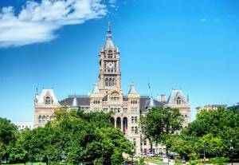

Salt Lake City History
In ancient times Utah was inhabited by various Native American groups. The ancient
Pueblo People, also known
as the Anasazi, built large communities in southern Utah from roughly the year 1 to 1300 AD. The Ute
Tribe,
from which the state takes its name, and the Navajo Indians arrived later in this region.
Salt Lake City was founded on July 24, 1847, by a group of Mormon pioneers. (Mormons are members of the
Church of Jesus Christ of Latter-day Saints.) The pioneers, led by Brigham Young, were the first
non-Indians
to settle permanently in the Salt Lake Valley. The founding group numbered 148, consisting of 143 men,
three
women, and two children.
The Mormons came to the valley in search of a region where they could practice their religion, free from
hostile mobs and persecution. When Brigham Young first saw the valley he said, "This is the right
place."
On the very day of arrival the pioneers began tilling the soil and planting crops. Within a few days
plans
were drawn for Great Salt Lake City, named after the salty inland lake which dominated the desert to the
west. Out from the center of the city, now Temple Square, blocks were arranged on a grid pattern in
10-acre
squares, separated by streets 132 feet wide -- "wide enough for a team of four oxen and a covered wagon
to
turn around."
In 1848, more emigrants came to the valley. But a late frost, drought, and a plague of crickets nearly
destroyed the harvest. Flocks of seagulls consumed the crickets and enough of the crop was saved to
enable
the settlers to survive the winter of 1848-49. In gratitude, the seagull was later designated Utah's
state
bird.
Many of the pioneers were European converts to Mormonism. During the decade that followed they brought
their
culture, languages, and skills to the valley, building Salt Lake City into a cosmopolitan center.
When the Mormons first arrived in the valley the region was part of Mexico. A treaty signed in 1848
ceded it
to the United States, and in 1850, the "State of Deseret" became the Utah Territory. Deseret means
honeybee,
a symbol of industriousness. Utah's state symbol is the beehive.
Construction on the Mormon temple began in 1853, but the capstone of this magnificent structure was not
put
into place until 1892. The temple was built with granite blocks which, until a branch railroad line was
run
into Little Cottonwood Canyon, were individually hauled by ox and wagon from the canyon to the building
site.
The California gold rush brought emigrants through Great Salt Lake City. U.S. soldiers were stationed
here
in the 1850s and during the Civil War. Trade with these sojourners brought to the Mormons a measure of
prosperity, although agriculture continued as the mainstay.
In 1869, the transcontinental railroad was completed by the driving of the Golden Spike at Promontory
Summit, some 80 miles northwest of Salt Lake City. Utah was thus connected to the East and West. Many
people
traveled by rail to see the "City of the Saints." Some stayed to make and to lose their fortunes in
mining.
From the 1860s to the 1920s hundreds of copper, silver, gold, and lead mines were opened in the nearby
canyons, including Bingham Canyon. Gigantic smelters were later built to refine the ore. Some prosperous
mine owners constructed large, gracious homes along South Temple, once known as Brigham Street.
The 1890s were a decade of change. The Mormon Church officially ended the practice of polygamy. In 1896,
Utah became the 45th state and the third to extend the vote to women. Salt Lake City was its capital.
"Great" had been dropped from the name in 1868.
Salt Lake began to assume its present character in the early 1900s. The State Capitol and many other
historic buildings were constructed. Electric trolleys, garaged at Trolley Square (now a popular
shopping
mall), were installed to transport people living in the Avenues, Capitol Hill, Liberty Park, and
Sugarhouse
areas to downtown. The trolleys were gradually replaced in the 1930s by buses. The last streetcar line
was
discontinued in 1941.
Eagle Gate, which had served to mark the entrance to Brigham Young's estate, was reconstructed to allow
traffic flow. City parks were built, sewer systems and street lighting were installed, and streets were
paved. Between 1900-1930, the city's population nearly tripled.
The Great Depression brought construction to a standstill, but the boom sounded again during World War
II.
War industries and military installations revitalized the economy. Workers and soldiers spent their
money in
the city's restaurants, shops, ballrooms, and theaters.
During the 1960s several commercial and service centers were built in the suburbs, drawing business away
from downtown. To help counteract this movement, the Mormon Church invested $40 million in development
of a
downtown shopping mall. The ZCMI Center Mall, named for Zions Cooperative Mercantile Institution, a
prominent retail chain which was begun in Salt Lake's pioneer days, is the result of that effort. In the
1970s new businesses and shopping malls were built and classic older buildings were renovated. City-wide
beautification projects generated vitality and activity in the downtown community.
Salt Lake continued to grow in the 1980s. Development included the Salt Palace Convention Center
expansion,
the Salt Lake International Center, University of Utah Research Park, and Triad Center.
The downtown skyline changed again in the 1990s when the Salt Palace Convention Center was rebuilt and a
major office tower and new courts complex were constructed. Redeveloped city blocks, restored building
facades and new urban parks further enhanced the beauty of downtown.
The Salt Lake City International Airport added a new runway, an international arrivals building, a
multi-level parking structure and an 18-hole golf course.
Utah continues to experience strong economic and employment growth. Ranked one of the best environments
for
business, the Salt Lake area's concentration of biomedical, high technology, and software firms is among
the
highest in the nation.
Thriving convention business and the success of the 2002 Olympic Winter Games sparked robust growth in
Salt
Lake's hotel industry. Over two thousand rooms were added in anticipation of the Olympics, for a total
of
15,800.
The Salt Palace Convention Center once again underwent expansion. It now features 53 meeting rooms,
370,000
square feet of exhibit space, and a 45,000 square foot ballroom. A 243,000 square foot suburban
convention
center has also been recently constructed.
Transportation projects have included the I-15 freeway reconstruction and the launch of TRAX, a $312
million
light-rail system which transports passengers north and south through the Salt Lake valley and downtown.
Salt Lake was proud to host the Olympic Winter Games in February 2002. The largest city ever to host the
winter games, Salt Lake prepared well in advance for the most prestigious event of its history. Many
venues
are still in place and are available for the public to enjoy and relive Olympic memories. The world
continues to be welcome here! Please enjoy Salt Lake's colorful past, exciting present, and promising
future. Source